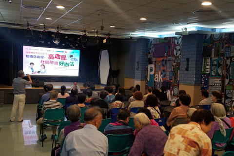

醫學界籲低鹽防高血壓

預防高血壓講座出席者眾。
【特訊】由澳門高血壓聯盟聯同鏡湖醫院、澳門心臟學會、澳門介入心血管病學會及救世軍（澳門）合辦，並由澳門基金會支持的「知曉你的血壓」世界高血壓日社區活動於昨日舉行，特邀心內科專家講解高血壓成因、種類及預防措施等，其中特別講解膳食及鹽與高血壓之間的關係以及高血壓會帶來中風的風險，與數百居民共同關注高血壓。
活動開幕式昨日下午三時三十分假澳門街坊會聯合總會栢蕙活動中心綜合大禮堂舉行，由澳門高血壓聯盟主席馮建章、鏡湖醫院副院長謝學斌、救世軍港澳軍區祐漢隊隊長趙棟林、澳門基金會代表黃凱梅及工人醫療所主任區子揚主持。
馮建章致詞表示，高血壓是一個特別病症，可能完全沒有徵狀，不少人也不知自己患上高血壓，直至併發症出現，始知患病。相對而言，本澳居民有防治高血壓的意識、關注預防和控制方法，與醫務人員、社會各界的宣傳息息相關。未來將加強與各機構合作推廣，令更多人及早關注高血壓病。
其後由心內科專家吳寶群醫生以「膳食與高血壓的關係」為題開講，她指出心血管病佔全球死亡個案約百分之三十，當中冠心病、高血壓以及中風為最常見的心血管疾病，估計全球數以億計人士患有高血壓。澳門情況亦不容樂觀，一三年統計資料顯示，患病率為三成四，中老年女性高血壓患病率上升更值得關注。而另一位心內科專家譚健鍬醫生再以「中風與高血壓之間的關聯性」為題開講，呼籲市民經常注意個人的心臟及血壓健康，若察覺血壓異常應盡早求醫，以降低患上中風的風險。
一般而言，患者初期沒有明顯病徵，往往延誤求醫或忽視療程，引致嚴重併發症，甚至死亡。改變生活方式、及早診治、定時服藥及覆診、控制體重、充足休息、合理飲食、保持心境開朗等，均能有效控制或預防高血壓病。其中，專家重點指出合理持續的低鹽攝入能夠有效地減少患高血壓的風險，WHO建議成年人每日攝取少於二千毫克的鈉，即相當於五克鹽；兒童應比成年人攝取更少鹽份。因此，專家強烈建議居民需要注意飲食習慣，儘量避免高鹽攝入；除此以外，控制體重、堅持適度運動、避免煙酒以及規律生活也是預防高血壓的有效方法。